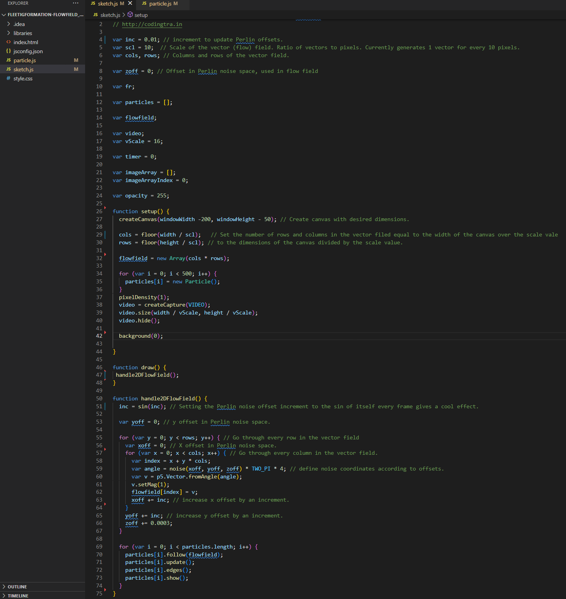
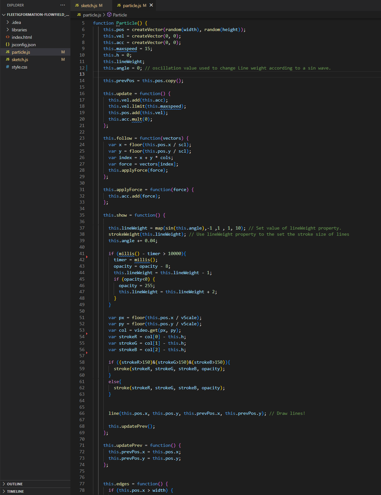

About this portfolio: This is a collection of real-time rendering projects, and other tech-art related pieces realized in Unreal Engine, Blender and p5.js.

About this piece: Proto-Glod is a third-person narrative-fabulative action playground game. The player steps into the shoes of a 5 to 7 year old child in a library, who can change any one object into any other by storing an imprint of the object in a magical book, then targeting another object in the environment. It's all fun and games until you use your powers on a human. Reality-based hijinks ensue, and mystic-cosmic shenanigans emerge out of the chaos. The kid learns that they are a demigod of indeterminacy; conduit of primordial chaos, god(dess) of non-deterministic fate from Mesoamerican mythology: Tezcatlipoca.
Follow up on Proto-Glod's development on GitHub:
- By checking out my commit history.
- Reading my process journal entries (newest at the bottom).
- And my thoughts on why I do the things I do.

About this piece: Environments created in UE5 using megascans assets, LiDAR scans and landscape tools. Sleeping stone person and ribcage modeled in Blender, textured in UE. Clouds blocked out in UE5 using volumetric cloud blueprints.
Produced for The Nostagain Network.

About this piece: Poster art made for The Other Market Game and The Loot Garden Art Market.
Assets are from the Megascans library, and custum LiDAR scans. Shader techniques include dynamic gradients and refractive effects.
About this piece: Video distortion effect using a particle system that takes on pixel color values from a webcam feed. The movement is driven by Perlin Noise vector flow fields. With line weight and opacity, and flow field scale parametrized and affected by oscillating sine waves. Written in P5.js.
Developed as part of Fleeting Formation, in collaboration with Nour Chahine & Anastasia Statsenko.
Code:


About this piece: A particle system responsive to sound, made in UE5. Thematically exploring the first-person visual experience from a meditative point of view --The headless way. Music track is Parallel 6 by Four Tet.
About this piece: A scene combining experiments in sculpting, shader creation, geometry nodes and volumetric effects. Made in blender.


About this piece: Cinematic exploration in part inspired by narrative themes in the Sci-Fi Horror novel The Luminous Dead. Edited and rendered out of UE4 using the Sequencer, camera DOF effects achieved in-engine. Post-processed in After Effects, rock material made in Substance Designer.

About this piece:An experiment with volumetric clouds in Blender, featuring vector animation made in After Effects.
Website by
Leo